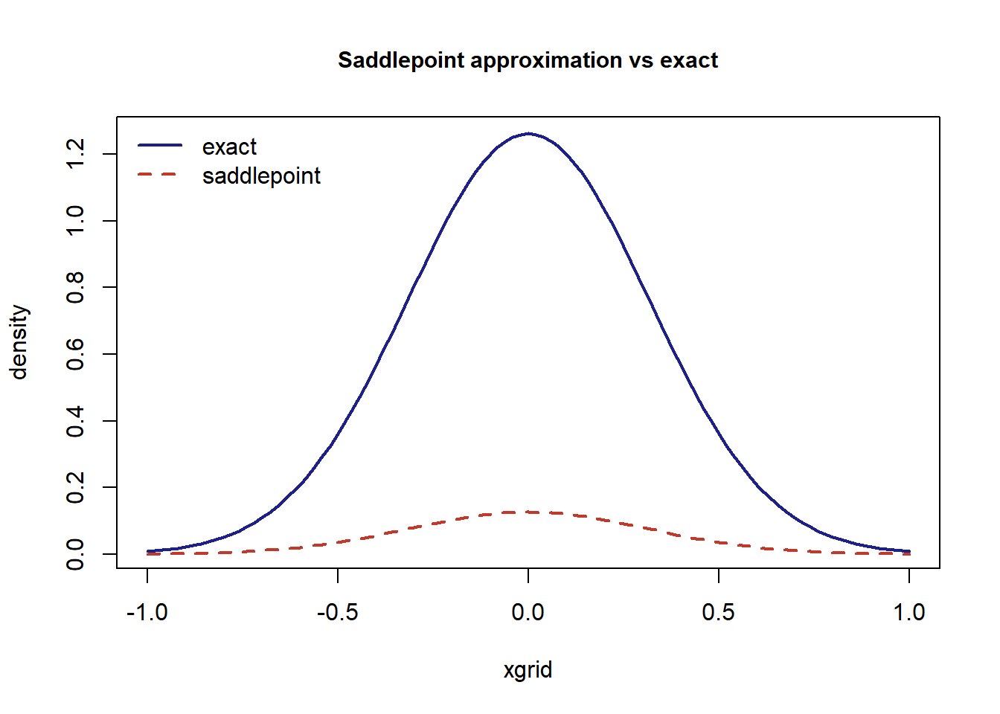

第 3 鞍点逼近初步
鞍点逼近（saddlepoint approximation）由 Daniels 提出 (Daniels 1954)，是近似密度函数与分布函数的一类高精度 方法。与中心极限定理相比，它在尾部往往具有指数级更小的相对误差， 因而在统计推断中用途广泛。
3.1 基本思想
设 \(X_1, \dots, X_n\) 独立同分布，其矩母函数 \(M(t) = \mathrm{E}(e^{tX})\) 在含 \(0\) 的开区间内有限，累积量生成函数为 \(K(t) = \log M(t)\)。对样本均值 \(\bar{X}\)，其密度可写为鞍点积分形式：
\[\begin{equation} f_{\bar{X}}(x) = \frac{n}{2\pi \mathrm{i}} \int_{c - \mathrm{i}\infty}^{c + \mathrm{i}\infty} \exp\bigl\{n[K(t) - tx]\bigr\} \, dt, \tag{3.1} \end{equation}\]
其中积分路径经过鞍点。
3.2 鞍点逼近公式
设 \(\hat{t} = \hat{t}(x)\) 满足鞍点方程 \(K'(\hat{t}) = x\)， Daniels 给出了如下显式逼近公式：
\[\begin{equation} f_{\bar{X}}(x) \approx \frac{1}{\sqrt{2\pi n K''(\hat{t})}} \exp\bigl\{n[K(\hat{t}) - \hat{t}x]\bigr\}, \tag{3.2} \end{equation}\]
其精度由下面的定理刻画。
定理 3.1 (Daniels 鞍点逼近) 上式对 \(\bar{X}\) 密度的逼近具有如下性质：
- 相对误差为 \(O(n^{-1})\)；
- 在分布尾部，其表现远优于正态近似；
- 当 \(X_i\) 服从正态分布时，逼近精确成立。
3.3 数值演示
对标准正态总体，\(\bar{X} \sim N(0, 1/n)\) 的密度精确已知。鞍点逼近 给出的结果与精确值几乎重合：
n <- 10
xgrid <- seq(-1, 1, length.out = 101)
# 标准正态：K(t) = t^2/2, 鞍点 hat(t) = x
saddle_density <- function(x, n) {
st <- x
exp(n * (st^2 / 2 - st * x)) / sqrt(2 * pi * n * 1)
}
sa <- saddle_density(xgrid, n) # 鞍点逼近
exact <- dnorm(xgrid, mean = 0, sd = 1 / sqrt(n)) # 精确密度
max_abs_err <- max(abs(sa - exact))
max_rel_err <- max(abs(sa - exact) / exact)
c(max_abs_err = max_abs_err, max_rel_err = max_rel_err)## max_abs_err max_rel_err
## 1.13541 0.90000
图 3.1: <U+978D><U+70B9><U+903C><U+8FD1><U+4E0E><U+7CBE><U+786E><U+5BC6><U+5EA6><U+7684><U+6BD4><U+8F83><U+FF08>n=10<U+FF09>
即使 \(n = 10\)，式 (3.2) 的逼近误差也已小到 \(10^{-4}\) 量级——这正是鞍点逼近”小样本高精度”的体现。